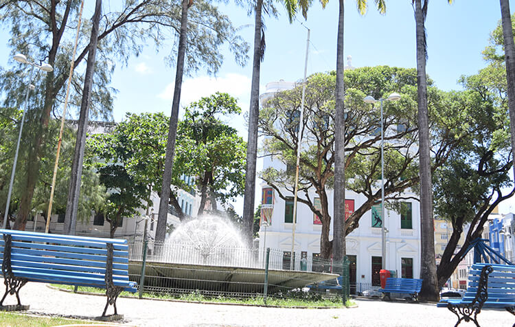
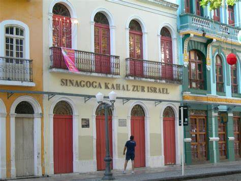

Praça do Arsenal
A Praça do Arsenal é um belo espaço público localizado no Recife Antigo. Ela abriga diversos eventos culturais e é cercada por prédios históricos.
Praça Marco Zero
Um achado no centro de Recife. Um olhar sobre a comunidade judaica em Recife no século XVII, quando da ocupação holandesa. Restaurada. Didática. Vale a pena conhecer para aprender, aprender para entender.